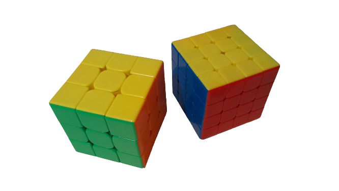

I’ve had a lot of hobbies over the years, because I tend to obsess over one for a while and then move onto another one. Thanks to this I have picked up a lot of skills including, speed cubing, (my best time is 19sec) flipbooks, touch typing, devil sticks, youtube, editing, yoyo, coding and drawing. I also enjoy playing games like Minecraft in my free time. I find it easier to getter better at something when I have friends doing it too so we can challenge each other.
NEXT--> 